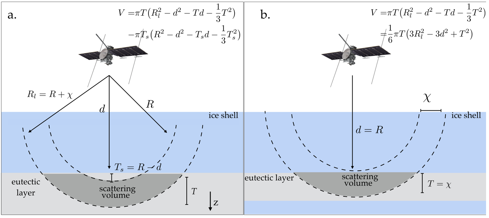

Planetary bodies throughout our solar system exhibit a plethora of surface features that bear striking resemblance to Earth's natural hazards. By studying these extraterrestrial landscapes, we can gain valuable insights into not only the planetary processes shaping them but also terrestrial processes on our own planet. Our research delves into the captivating worlds of Europa, Titan, and Mars, all of which showcase intriguing features reminiscent of those found on Earth. Through meticulous observation and analysis, we strive to uncover the parallels between these distant celestial bodies and our own, unraveling the mysteries of their formation and evolution. By exploring these planetary analogues, we expand our understanding of the interconnected nature of planetary dynamics, fostering a deeper appreciation for the complexities of both our own planet and the vast cosmic expanse beyond.
Recent Publications
-
 Assessing the detectability of Europa’s eutectic zone using radar sounding (Icarus, 2020)
Radar sounding is a technique that allows us to see beneath the icy surface of moons like Europa, a moon of Jupiter. It helps us to directly image the different layers within the icy shell. Missions like the JUpiter ICy moons Explorer and Europa Clipper have radar sounders onboard to explore these subsurface layers. We are particularly interested in investigating the interface between the ice and the ocean below, as well as the presence of liquid water in the eutectic zone of Europa's ice shell. However, predicting the strength of the radar signals reflected from these water bodies is challenging due to the various ways they can be arranged and the ice above them. To overcome this challenge, we use different water configurations and scattering models to estimate the detectability of the eutectic zone by radar. Our findings suggest that there is a range of plausible parameters for the eutectic zone, which could produce detectable radar echoes.